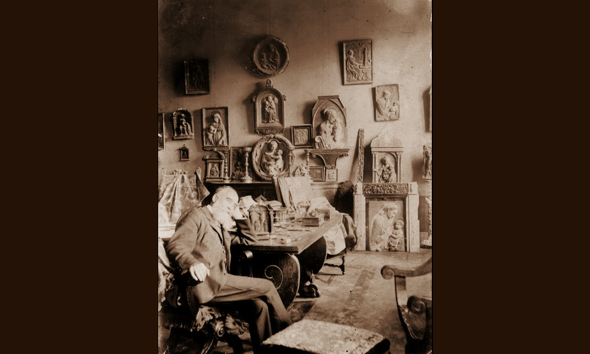

Costantini
Firenze, entità attiva dal 1876 al 1918

- PERSONE
- Emilio Costantini, 1842–1926, pittore e antiquario
Davide Augusto Costantini, 1875–?, antiquario - IN CATALOGO
- Opere transitate, catalogo della Fondazione Zeri →
Emilio Costantini (1848-1926) nacque a Genzano di Roma nel 1842. Formatosi come pittore e ottenuto il diploma all'Accademia nel 1874, veniva soprannominato dai contemporanei 'il professore', in quanto insegnava all'Istituto d'Arte di Firenze. Nel 1880 possedeva uno studio in Via del Podere 6, dove esponeva copie di dipinti antichi e acquerelli destinati al pubblico straniero.
Nonostante si tenda a limitare l'attività di mercante di Costantini agli anni tra il 1883 e il 1918, un documento conservato presso l'Ufficio di Esportazioni di Firenze permette di attestare come fosse coinvolto nel commercio di opere d'arte già nel 1876. La galleria dell'antiquario era ubicata in Corso Regina Elena, al civico 6. Luigi Bellini (1884-1957), noto mercante fiorentino, nei suoi scritti ricorda la galleria di Costantini come una realtà secondaria nel panorama antiquariale della città. Ciò contrasta con l'altissimo livello della sua clientela.
Nel corso degli anni, infatti egli vendette dipinti e sculture del Gotico e del Rinascimento italiano a Stefano Bardini (1836-1922), Herbert Percy Horne, Wilhelm von Bode, Bernard Berenson e Károly Pulszky. A quest'ultimo, direttore del dipartimento di antichità del Museo di Belle Arti di Budapest, fornì dal 1894 numerose opere, tanto da divenire uno dei maggiori fornitori dell'istituzione ungherese.
Nel 1900 è segnalata una sua galleria in Lungarno Guicciardini 7. Nell'attività commerciale venne coinvolto anche il figlio, Davide Augusto Costantini (1875-?), nato dal matrimonio tra Emilio e Giuseppina Arntezn. Il ruolo di quest'ultimo nel promuovere gli affari del padre non è ad oggi chiaro. Il giovane si dovette spostare negli Stati Uniti nel corso degli anni Dieci, dove raggiunse una posizione di prestigio all'interno dell'ambasciata italiana di New York. Dopo la morte della prima moglie, avvenuta nel 1918, si sposò in seconde nozze nel 1922 con Freida Frash Whiton, esponente dell'alta società locale e nel 1925 ricevette il titolo di conte da Vittorio Emanuele III.
Altri antiquari
Clienti
- Bernard Berenson
- Herbert Percy Horne
- Károly Pulszky
- Stefano Bardini
- Wilhelm von Bode
Bibliografia essenziale
- Bellini, L., De Chirico, G. (1947), Nel mondo degli antiquari, Firenze, Arnaud
- Cappellini, P. (2019), Trading Old Masters in Florence 1890-1914: heritage protection and the Florentine art trade in post-unification Italy, in «Journal of the history of collections», vol. 31, 2, pp. 363-371
- Cappellini, P. (2023), Bardini and Beyond: Wilhelm Bode and the art dealers in Florence, in Smalcerz, pp. 125-148
- Fehér, I. (2012), Károly Pulszky and the Florentine acquisitions for the Szépmúvészeti Múzeum in Budapest between 1893 and 1895, in «Mitteilungen des Kunsthistorischen institutes in Florenz», vol. 54 (20102012), 2, pp. 319-364
- Giannini, C. (2011), Attilio Steffanoni, restauratore e antiquario. Un diario inedito, in Sciolla, G.C., Rovetta, A. (a cura di), "Francesco Malaguzzi Valeri (1867- 1928). Tra storiografia artistica, museo e tutela", atti del convegno (Milano-Bologna, 20-21 ottobre 2011), Milano, Segrate, pp. 205-216
- Watrelot, M. (2020), Wilhelm von Bode and Prince Johann II von Liechtenstein: the private correspondence 1882-1925, in Catterson, pp. 11-46